.jpg){kind=link}
Coastal city in California, situated on a south-facing section of coastline, the city lies between the steeply rising Santa Ynez Mountains and the Pacific Ocean
South: San Simeon
How to Get There
Overview
Santa Barbara, the "American Riviera," is a coastal city of about 88,000 residents on the Southern California coast, about 90 miles northwest of Los Angeles. It lies between the Santa Ynez Mountains and the Pacific, with red-tile roofs, Spanish Colonial Revival architecture, palm-lined beaches and a Mediterranean climate that attracts visitors all year.
Visitors come to Santa Barbara for its beaches, its historic downtown and State Street, its mission, its wine country in the Santa Ynez Valley and its relaxed atmosphere. The city is also a gateway to the Channel Islands and Santa Ynez wine region, and a favorite of film and television stars.
History
The Chumash lived on this coast for thousands of years, and Spanish explorers arrived in 1602. The Spanish built the Presidio in 1782 and Mission Santa Barbara in 1786. After California became part of the United States, the city grew as a resort, and the 1925 earthquake destroyed much of downtown; the rebuilt city adopted a unified Spanish Colonial Revival style, which gives it its distinctive look today.
Sightseeing and Popular Landmarks
Mission Santa Barbara, the "Queen of the Missions," the Santa Barbara County Courthouse with its clock tower views, Stearns Wharf and El Presidio are the main historic sights. The Funk Zone is a lively district of tasting rooms and galleries near the waterfront, and the Moreton Bay Fig Tree is a huge, 19th-century landmark.
Culture and Museums
The Santa Barbara Museum of Natural History, the Santa Barbara Maritime Museum, the Santa Barbara Museum of Art and the Santa Barbara Historical Museum are the main museums. The city hosts Old Spanish Days Fiesta each August, the Santa Barbara International Film Festival, and the Lobero and Granada theaters stage music and dance.
Parks
The Santa Barbara Botanic Garden showcases California native plants, and beaches such as Leadbetter Beach and Shoreline Park offer swimming and whale watching. Mountain trails, such as Seven Falls and the Inspiration Point Trail, climb into the Santa Ynez Mountains, and the 1000 Steps Beach stairway leads to a quiet cove.
Seasons and Weather
Santa Barbara has one of the mildest climates in the country, with highs in the 70s°F most of the year and about 18 inches of rain, almost all of it in winter. Early summer often brings morning fog, called "June gloom," and fall is warm and clear. Wildfires and winter mudslides, such as the 2018 Montecito debris flow, are risks in the foothills.
This article uses material from Wikipedia as well as information from official tourism and institutional sources. Key references include Visit Santa Barbara, City of Santa Barbara, Santa Barbara Museum of Natural History, Channel Islands National Park, and National Weather Service Los Angeles. Wikipedia material is from the article "Santa Barbara, California", released under the Creative Commons Attribution-Share-Alike License 3.0.
Featured Locations
Kristina D.C. Hoeppner from Wellington, New Zealand, CC BY-SA 2.0, via Wikimedia Commons; Image Size Adjusted
_(6072563332).jpg){kind=link}
1000 Steps Beach
A hidden coastal access point featuring a steep stair descent to a secluded beach with dramatic cliffs, rocky shoreline, and sweeping ocean views.
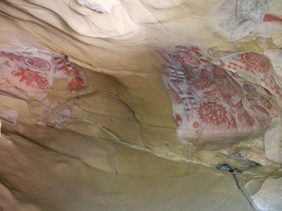
Kristina D.C. Hoeppner from Wellington, New Zealand, CC BY-SA 2.0, via Wikimedia Commons; Image Size Adjusted
Chumash Painted Cave
State park preserving a small sandstone cave adorned with rock art attributed to the Chumash people
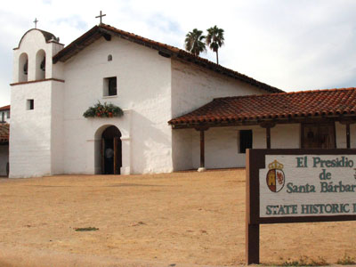
Prayitno / Thank you for (12 millions +) view from Los Angeles, USA, CC BY 2.0, via Wikimedia Commons; Image Size Adjusted
.jpg){kind=link}
El Presidio de Santa Barbara
Former military installation built by Spain in 1782, and in modern times, the Presidio serves as a significant tourist attraction, museum and an active archaeological site
Kristina D.C. Hoeppner from Wellington, New Zealand, CC BY-SA 2.0, via Wikimedia Commons; Image Size Adjusted
Funk Zone
Vibrant arts and cultural district featuring galleries, wine tasting rooms, craft breweries, and eclectic dining set within a revitalized industrial waterfront area.
Kristina D.C. Hoeppner from Wellington, New Zealand, CC BY-SA 2.0, via Wikimedia Commons; Image Size Adjusted
Inspiration Point Trail
A hillside hiking trail offering panoramic views of the coastline, cityscape, and surrounding mountains along a steadily climbing scenic route.
Doc Searls from Santa Barbara, USA, CC BY 2.0, via Wikimedia Commons; Image Size Adjusted
Leadbetter Beach
Popular beach in Santa Barbara, California, situated below Leadbetter Hill

Doc Searls from Santa Barbara, USA, CC BY 2.0, via Wikimedia Commons; Image Size Adjusted
Mission Santa Barbara
Spanish mission founded by Padre Fermín Lasuén for the Franciscan order on December 4, 1786, is the namesake of the city of Santa Barbara as well as of Santa Barbara County
Kristina D.C. Hoeppner from Wellington, New Zealand, CC BY-SA 2.0, via Wikimedia Commons; Image Size Adjusted
Moreton Bay Fig Tree
Massive historic fig tree with sprawling branches and shaded canopy, serving as a natural landmark and gathering place near the waterfront.
Kristina D.C. Hoeppner from Wellington, New Zealand, CC BY-SA 2.0, via Wikimedia Commons; Image Size Adjusted
Point Castillo
Historic coastal landmark featuring a hillside monument and panoramic views overlooking the harbor, beaches, and city shoreline.
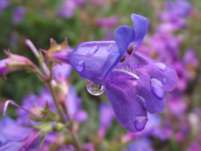
Stickpen, CC0, via Wikimedia Commons; Image Size Adjusted

Santa Barbara Botanical Garden
78-acre botanical garden, containing over 1,000 species of rare and indigenous plants, and approximately 5.7 miles of hiking trails within the garden
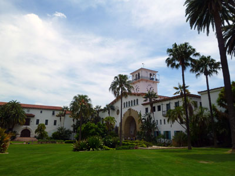
Archinia, CC BY-SA 3.0, via Wikimedia Commons; Image Size Adjusted

Santa Barbara County Courthouse
Spanish Colonial Revival style building designed completed in 1929, and the prime example of Santa Barbara's adoption of Spanish Colonial as its civic style
Kristina D.C. Hoeppner from Wellington, New Zealand, CC BY-SA 2.0, via Wikimedia Commons; Image Size Adjusted
Santa Barbara Maritime Museum
Interactive waterfront museum showcasing maritime history, seafaring artifacts, and exhibits celebrating the coastal heritage of the region.
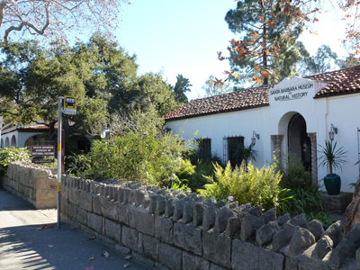
Jllm06, CC BY-SA 3.0, via Wikimedia Commons; Image Size Adjusted

Santa Barbara Museum of Natural History
Museum featuring ten indoor exhibit halls focusing on regional natural history including astronomy, birds, insects, geology, mammals, marine life, paleontology, plant life, and the Chumash Indians
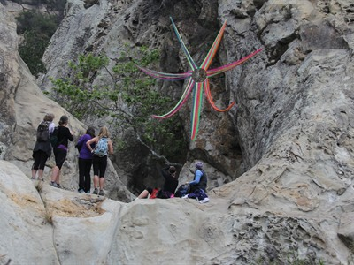
Damian Gadal, CC BY 2.0, via Wikimedia Commons; Image Size Adjusted
.jpg){kind=link}
Seven Falls
Rugged canyon trail featuring natural rock pools, cascading waterfalls, and seasonal creek crossings surrounded by sandstone cliffs and native vegetation.
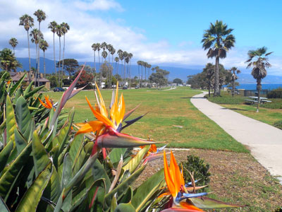
Damian Gadal, CC BY 2.0, via Wikimedia Commons; Image Size Adjusted
Shoreline Park
Long, narrow ocean-side strip of land on top of a mesa, is one of Santa Barbara's most popular parks
Stearns Wharf
Pier in the harbor in Santa Barbara, California, when completed In 1872, it became the longest deep-water pier between Los Angeles and San Francisco
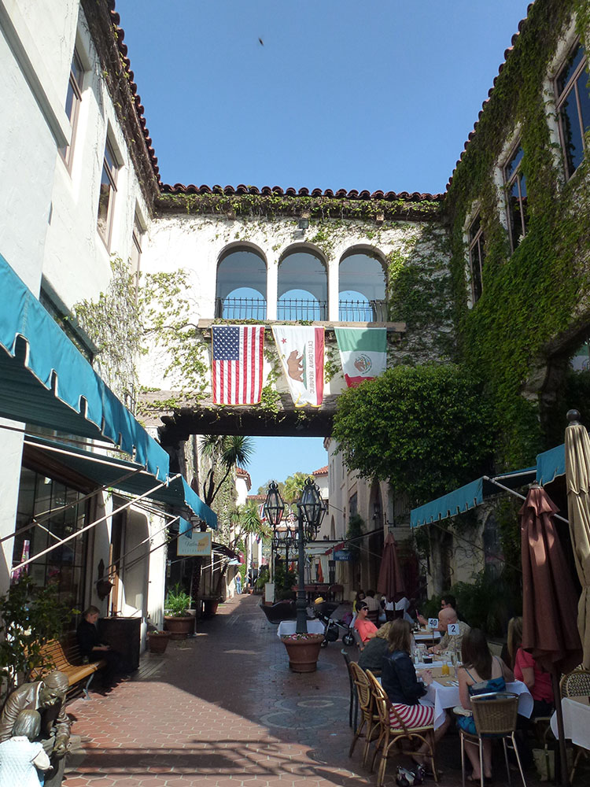
_(2)_(cropped).jpg){kind=link}
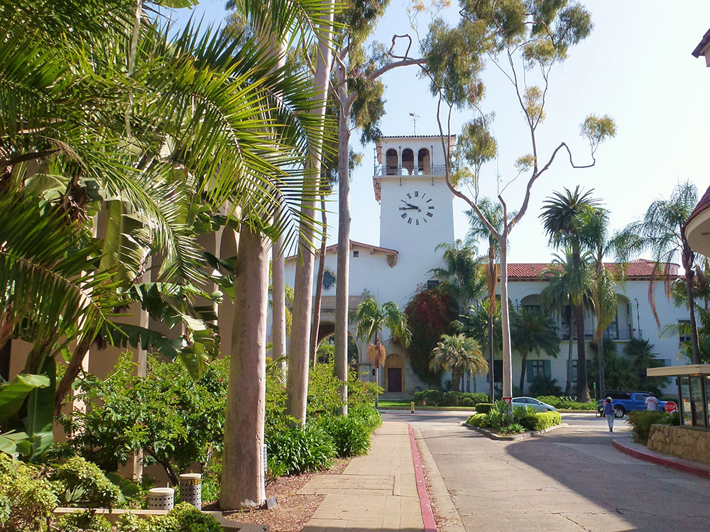
_(4).jpg){kind=link}
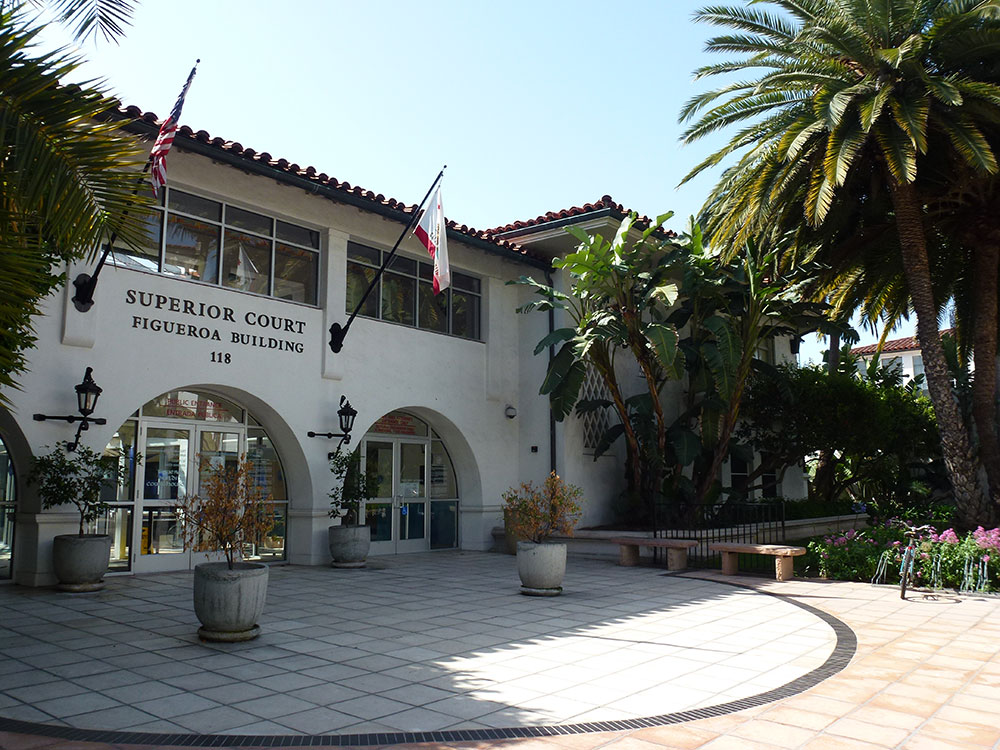
_(6).jpg){kind=link}
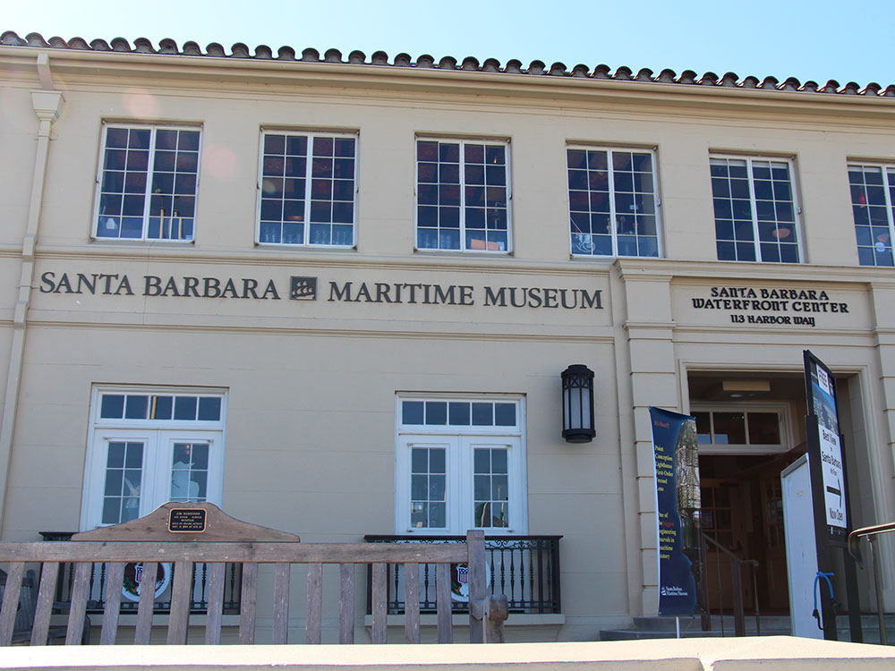